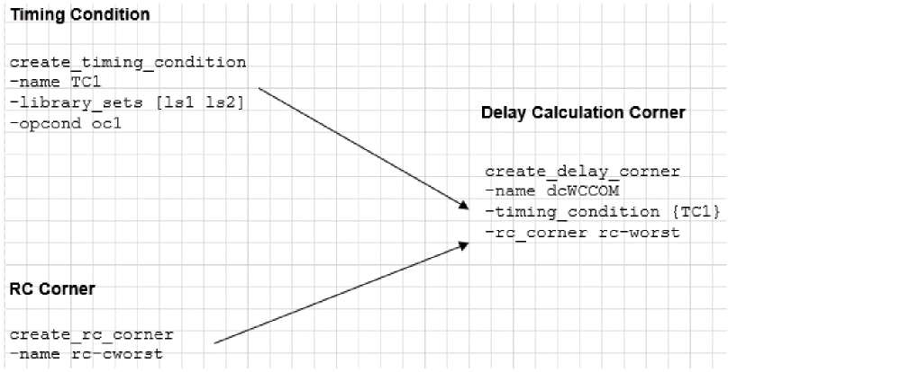

Delay Corner Objects
Creating Delay Corner Objects
A delay corner provides information necessary to control delay calculation for a specific analysis view. Each corner contains information on the libraries, the operating conditions with which the libraries should be accessed, and the RC corner for loading the parasitic data. Delay corner objects can be shared by multiple top-level analysis views.
To create a delay calculation corner, use the following command:
Use separate delay calculation corners to define major PVT operating points (for example, Best-Case and Worst-Case).
Use the -early_* and -late_* parameters within a single delay calculation corner to control on-chip variation.
The following figure shows the creation of a delay calculation corner called dcWCCOM.This corner uses the libraries from IsCOM-1V, sets the operating condition to WCCOM, as defined in the stdcell_1V timing library, and uses the rc-cworst RC corner:
Figure -4 Creation of a delay calculation corner

Editing Delay Corner Objects
To add or change attribute values of an existing delay calculation corner object, use the following command:
In GUI mode, you can make changes to a delay calculation corner object by using the Add Delay Corner form.
Click the File tab and choose Configure MMMC. A new window opens, double-click on the Delay Corners tab. Select the type of analysis mode and specify the RC corner, library set, OpCond Lib, OpCond, and IrDrop File. Once done, click Apply and OK to save the settings.
Click the Timing & SI tab and choose MMMC Browser. A new window opens, double-click on the Delay Corners tab. Select the type of analysis mode and specify the RC corner, Library set, OpCond Lib, OpCond, and IrDrop File. Once done, click Apply and OK to save the settings.
You can use the update_delay_corner command or the “Add Delay Corner” form before (or any time later) multi-mode multi-corner view definitions are loaded into the design. However, once the software is in multi-mode multi-corner analysis mode, any changes to an existing object result in the timing, delay calculation, and RC data being reset for all analysis views.
The following example shows how to create two corners and update the delay corners with the appropriate information.
Create worst-case RC corner based on the worst-case RC parameters:
create_rc_corner -name rc_cworst
Best-case RC corner based on the best-case RC parameters:
create_rc_corner -name rc_cbest
To associate the best-case and worst-case RC corners with the appropriate delay corner, use the update_delay_corner command:
update_delay_corner -name AV_HL_FUNC_MIN_RC1_dc -rc _corner rc_cworst
update_delay_corner -name AV_HL_FUNC_MIN_RC2_dc -rc_corner rc_cbest
update_delay_corner -name AV_HL_FUNC_MAX_RC1_dc -rc_corner rc_cworst
update_delay_corner -name AV_HL_FUNC_MAX_RC2_dc -rc_corner rc_cbest
update_delay_corner -name AV_HL_SCAN_MIN_RC1_dc -rc_corner rc_cworst
update_delay_corner -name AV_HL_SCAN_MAX_RC1_dc -rc_corner rc_cworst
update_delay_corner -name AV_HO_FUNC_MIN_RC1_dc -rc_corner rc_cworst
update_delay_corner -name AV_HO_FUNC_MAX_RC1_dc -rc_corner rc_cworst
update_delay_corner -name AV_LO_FUNC_MIN_RC1_dc -rc_corner rc_cworst
update_delay_corner -name AV_LO_FUNC_MAX_RC1_dc -rc_corner rc_cwors
Return to top